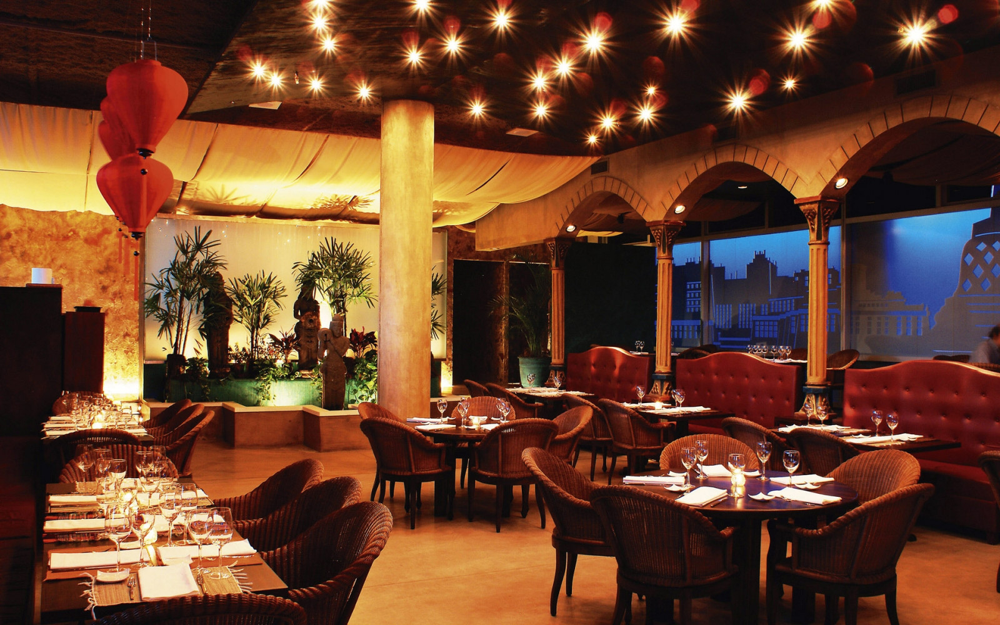

Cuesta Del Viento Parrilla Restaurate
Bienvenido a Cuesta del Viento Restorant, donde la pasión por la gastronomía se une con la
hospitalidad para
crear una experiencia única para nuestros comensales. Desde nuestra apertura, nos hemos comprometido a ofrecer
una cocina excepcional que celebra los sabores auténticos y la frescura de los ingredientes locales.
En Cuesta del Viento Restorant, creemos que la comida va más allá de simplemente alimentar el cuerpo; es un
medio para conectar, compartir y crear recuerdos duraderos. Por eso, nos esforzamos por crear un ambiente
acogedor y familiar donde cada visita se sienta como volver a casa.
Nuestro equipo de talentosos chefs está dedicado a explorar nuevas técnicas culinarias y rescatar recetas
tradicionales para sorprender y satisfacer incluso a los paladares más exigentes. Cada plato que sale de
nuestra
cocina es el resultado de una cuidadosa selección de ingredientes de la más alta calidad y una meticulosa
atención al detalle.
Además de nuestra deliciosa oferta gastronómica, en Cuesta del Viento Restorant nos enorgullecemos de ofrecer
un
servicio excepcional. Nuestro personal está aquí para asegurarse de que cada aspecto de tu experiencia sea
impecable, desde el momento en que entras por la puerta hasta que te marchas con una sonrisa en el rostro.
Ya sea que estés buscando disfrutar de una cena íntima con tu ser querido, celebrar una ocasión especial con
amigos y familiares, o simplemente saborear una comida reconfortante después de un largo día, en Cuesta del
Viento Restorant encontrarás el lugar perfecto para hacerlo.
Te invitamos a que te unas a nosotros en esta emocionante aventura culinaria. ¡Esperamos verte pronto en
Cuesta
del Viento Restorant!